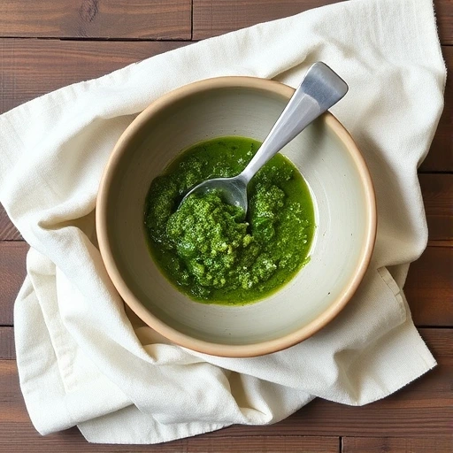
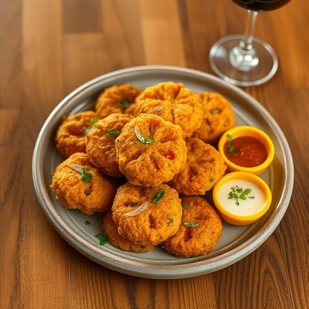

How to identify chickweed
Chickweed (Stellaria media) is a small, edible plant commonly found in gardens, lawns, and disturbed areas. It has a low-growing, spreading habit, typically forming dense mats. One of the key identifying features is the plant's stem, which often has a line of fine hairs on one side, giving it a characteristic “jointed” appearance. The plant’s stems are thin, slender, and can grow up to 12 inches long, often creeping along the ground and rooting at the nodes.
Heads and leaves of chickweed
The leaves are opposite, oval to lance-shaped, and about 1 to 2 inches long. They have a smooth or slightly serrated edge and a pale green color.
The flowers are small, white, and star-shaped, with five deeply notched petals, making them look like 10 petals. These flowers usually bloom from early spring to late fall.
Where to find chickweed
Chickweed thrives in moist, nutrient-rich soils and is often found in gardens, lawns, meadows, and waste areas. It prefers cooler temperatures and is common in shaded or partly sunny locations. Because of its widespread presence and edible nature, chickweed is a popular herb for foraging. It has a mild flavor and can be used in salads, soups, and as a garnish. However, it’s best to avoid plants near pesticides or chemicals.
Chickweed is used to make medicine
The leaf is used to make medicine. People take chickweed for constipation, stomach and bowel problems, blood disorders, asthma and other lung diseases, obesity, a vitamin C deficiency disease called scurvy, a skin condition called psoriasis, rabies, itching, and muscle and joint pain.
Chickweed in the kitchen
Chickweed, a nutritious wild green, is often used in the kitchen for its mild, slightly grassy flavor. It can be eaten raw in salads, providing a fresh, crunchy texture. Chickweed also makes a great addition to smoothies, soups, and stews, where its subtle taste blends well with other ingredients. But it also stands out being the main ingredient in a pesto, as in the following recipe.
It can be sautéed lightly with garlic and olive oil for a simple side dish or added to omelets, frittatas and fingerlicking pakoras, which you can from the recipe below.
Rich in vitamins and minerals, chickweed is a versatile and healthy herb, perfect for adding a fresh, green element to various dishes.
Recipes with chickweed
Chickweed Pesto
Ingredients
- 2-3 cups freshly picked young chickweed leaves
- 2-4 cloves of garlic
- 1/2 cup of extra virgin olive oil
- 1/4 cup parmesan cheese
- dash of sea salt
- handful of walnuts
- tablespoon of lemon juice (optional)
- lemon zest (optional)
- a glass container to store
Preparation Instructions
- Put garlic, parmesan, salt and walnuts in a blender and mix until minced.
- Add chickweed leaves and, if wished for, lemon juice and zest and blend it until al is smooth.
- Stir in the olive oil until you reach the consistence you are looking for. (Don't use the blender for this.)
- You can serve the pesto right away with rustic whole grain bread or french baguette.
- Tip: If you drizzle a thin layer of the same oil used to make the pesto, and seal the container, you can keep the pesto for one or two weeks in the fridge.
Chickweed and Garlic Pakoras
Ingredients
- 100g gram (chickpea) flour
- 1 tbsp medium curry powder, or to taste
- ½ tsp baking powder
- ½ tsp sea salt (or more)
- 50g chickweed, washed, dried and roughly chopped
- 1 small onion, peeled and chopped
- 2 or 3 garlic cloves, peeled and chopped
Preparation Instructions
- Mix the flour, curry powder, baking powder and salt together in a bowl, then slowly stir in enough water (around 120ml) to form a paste the consistency of mustard. Mix in the chickweed and garlic and stir until they are well coated.
- Heat a thin layer of oil in a heavy-based frying pan. When hot, spoon in heaped dessertspoonfuls of the pakora mixture to form little cakes, spacing them well apart.
- Cover and cook over a medium heat for about 5 minutes until crisp and golden brown on one side. Turn the cakes over to brown the other side.
- Drain on kitchen paper and serve at once.